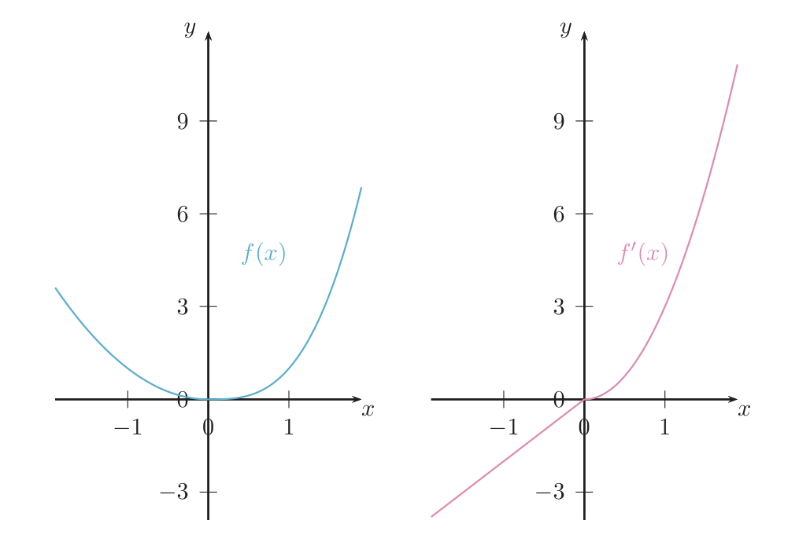
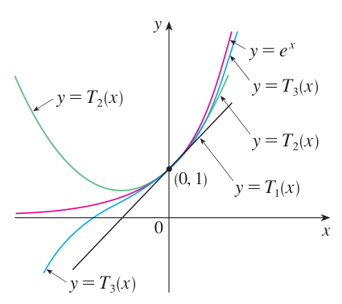
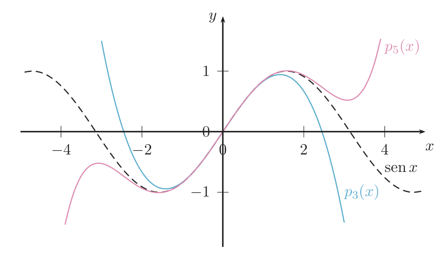
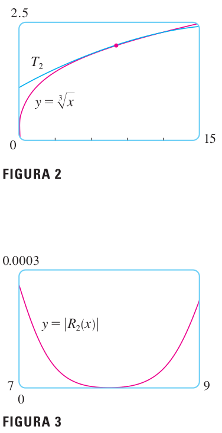
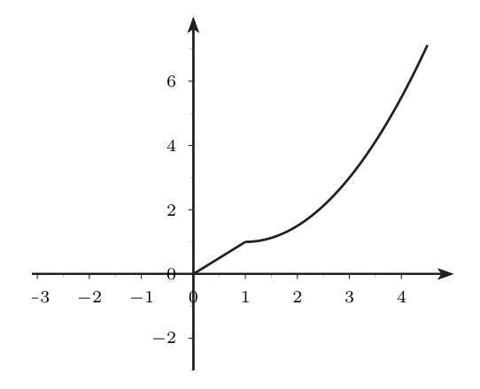

El Teorema de Taylor
Cómo sustituir una función complicada, cerca de un punto, por un polinomio que se calcula con sumas y productos, y cómo saber cuánto te equivocas al hacerlo.
0Antes de empezar U p.104
Una calculadora no sabe «hacer» $\operatorname{sen}0{,}5$ ni $\ln1{,}1$: solo suma, resta, multiplica y divide. Lo que sí sabe es evaluar polinomios. El Teorema de Taylor dice cómo construir, para una función $f$ y un punto $x_0$, un polinomio que se parece muchísimo a $f$ cerca de $x_0$, y da una fórmula del error que se comete. Aproximar sin saber el error no sirve de nada; aproximar con el error controlado es una herramienta de ingeniería.
U p.104Qué necesitas saber ya U pp.79-80 U pp.75, 81 U p.82 U p.96
- Derivar con soltura: tabla de derivadas, producto, cociente y regla de la cadena (Tema 2.2). (U pp.79-80)
- Definición de derivada como límite finito del cociente incremental y derivadas laterales. (U pp.75, 81)
- Regla de L'Hôpital para límites $\tfrac00$ (aparece en E 3.6). (U p.82)
- Teorema del valor medio: si $f$ es continua en $[a,b]$ y derivable en $(a,b)$, existe $c$ con $f(b)-f(a)=f'(c)(b-a)$. Es el caso más simple del teorema de esta unidad. (U p.96)
Mapa del tema
| Apartado | Qué contiene | Dónde está |
|---|---|---|
| 1 Derivadas sucesivas | $f'',f''',\dots,f^{(n}$; cuándo existen | U pp.104-106 |
| 2 Polinomio de Taylor | de la recta tangente a la parábola…; fórmula; orden frente a grado; ejemplos | U pp.107-110, 112 · S p.755, §3.10 · L pp.636-641 |
| 3 Resto y Teorema de Taylor | error exacto (Lagrange), método de acotación en 4 pasos | U p.111-112 · L p.642-643 · S p.756, 769-771 |
| 4 Puente: forma de Peano | $R_n=o((x-x_0)^n)$ y por qué se pueden sumar/multiplicar desarrollos | material externo a U (propio) |
| 5 Ejercicios | E 3.1–3.14 resueltos con receta | E pp.88-100 |
| 6 Ejemplos propios | 12 ejemplos de dificultad creciente | propio |
| 7 Errores, erratas y chuleta | lo que hay que llevar aprendido | síntesis |
Qué se pide en los ejercicios E pp.88-100
Tres tipos: (A) calcular derivadas de varios órdenes, incluido dónde existen (E 3.1–3.6); (B) calcular polinomios de Taylor, recentrar polinomios y razonar sobre su grado (E 3.7–3.13); (C) acotar el error con el resto de Lagrange (E 3.12, 3.14).
Según el cronograma del curso, el Tema 3 se complementa con «notas adicionales» del curso virtual: la notación de Landau ($o$, $O$) y la forma de Lagrange del error en interpolación. Esas notas no las tenemos, y el libro U no las contiene (en el índice del PDF de U hay una anotación manuscrita que dice justo eso). En este resumen, el apartado 4 explica la forma de Peano ($o$-pequeña) como material externo, marcado con la etiqueta P, construido solo con lo que sí demuestra U. Cuando dispongas de las notas del Aula Virtual, compara la notación. El error de interpolación es de la unidad 3.3.
U p.VIU tiene lo que cae en examen, pero es escueto: no explica por qué se igualan derivadas ni relaciona Taylor con la recta tangente. Para eso usamos Stewart (§3.10 y §11.10-11.11) y Larson (§9.7), indicando cada vez qué parte de U completan. Notación de U: $f^{(n}(x)$ es la derivada $n$-ésima (U escribe el paréntesis sin cerrar); $p_n$ es el polinomio de Taylor de orden $n$, es decir, de grado $\le n$; $R_n=f-p_n$ es el resto. Stewart escribe $T_n$ y $R_n$; Larson, $P_n$ y $R_n$.
1Derivadas sucesivas U pp.104-106
La derivada $f'$ es una función nueva, así que se puede volver a derivar. Si $f$ es la posición de un coche, $f'$ es su velocidad y $f''$ su aceleración; $f'''$ (el «tirón») cuenta cómo cambia la aceleración. Se pueden seguir derivando mientras haya derivada.
Si $f$ es derivable en un intervalo y $f'$ es derivable en $a$, la derivada segunda es $f''(a)=(f')'(a)$. Igual, $f'''=(f'')'$ y, en general, la derivada $n$-ésima $f^{(n}$ se obtiene derivando $n$ veces. Notación: $f^{(n}(x)=\dfrac{d^nf}{dx^n}(x)$. Se dice que $f$ es derivable $n$ veces (o de clase $C^n$ si además $f^{(n}$ es continua) cuando existen esas derivadas.
U pp.104, 106El paréntesis marca derivar. $f^{(4}(x)$ es la derivada cuarta; $(f(x))^4$ es la potencia. Además, «la derivada es $0$» no significa «no existe»: la derivada de la función nula es la función nula, así que un polinomio tiene derivadas de todos los órdenes (U lo aclara en una nota al margen del Ej. 3.1).
U p.105U calcula sucesivamente las derivadas de $3x^3$ (que se anulan a partir de la cuarta) y de $xe^{x^2}$ (cada una es un producto y una cadena, y crece en tamaño). Lección: escribe cada derivada completa y simplificada antes de derivar la siguiente.
U p.105Cuando la derivada segunda no existe: el Ejemplo 3.3 de U
U toma una función pegada a trozos con una rama $x^2$ (a la izquierda) y otra $x^3$ (a la derecha) en $0$. Su derivada $f'$ vale $2x$ a la izquierda y $3x^2$ a la derecha, y $f'(0)=0$ por ambos lados: $f$ es derivable con $f'$ continua. Pero $f'$ tiene en $0$ un «pico»: pendiente $2$ por la izquierda y $0$ por la derecha, así que no existe $f''(0)$. Se ve en la gráfica.

Fuera de los puntos de unión se deriva con las reglas de siempre. En un punto de unión hay que usar la definición (derivadas laterales), primero para $f'$ y luego, aplicada a $f'$, para $f''$. Hay derivada solo si los límites laterales son finitos e iguales.
U pp.81, 105-1062El polinomio de Taylor U pp.107-110
2.1 De la recta tangente a la parábola: la idea
Queremos un polinomio $p$ que imite a $f$ cerca de $x_0$. Se le exige que, en $x_0$, coincida con $f$ en valor y en derivadas sucesivas.
- Mismo valor: $p(x_0)=f(x_0)$. Es la mejor constante.
- Mismo valor y misma pendiente: $p(x)=f(x_0)+f'(x_0)(x-x_0)$. Es la recta tangente: en el mismo punto, misma altura y misma inclinación.
- Además, misma curvatura: se añade $\frac{f''(x_0)}{2}(x-x_0)^2$ y sale una parábola que se curva igual que $f$.
- Y así sucesivamente: cada término nuevo corrige lo que faltaba.
Analogía: es como ajustar una foto. Primero pones el centro en el sitio (valor), luego la inclinación (pendiente), luego cómo se dobla (segunda derivada), y cada corrección mejora el parecido cerca del centro, no lejos de él.
L pp.636-638 S pp.256-257El polinomio de Taylor de orden 1 es $p_1(x)=f(a)+f'(a)(x-a)$, la linealización de $f$ en $a$ que Stewart estudia en §3.10 («$T_1$ es lo mismo que la linealización de $f$ en $a$», §11.11). U no lo relaciona con la recta tangente: tú sí. Ejemplo de Stewart: $\sqrt{x+3}\approx 2+\tfrac14(x-1)$ cerca de $a=1$; la aproximación es buena cerca de $1$ y se estropea al alejarse.
S pp.250-252 S p.7682.2 Polinomios centrados en $x_0$
Decir que un polinomio está centrado en $x_0$ es escribirlo en potencias de $(x-x_0)$: $$q(x)=a_0+a_1(x-x_0)+a_2(x-x_0)^2+\dots+a_n(x-x_0)^n .$$ Para recentrar un polinomio dado en potencias de $x$, se sustituye $x=(x-x_0)+x_0$ y se desarrolla (U Ej. 3.4): por ejemplo, $x^2+x+2=(x-2)^2+5(x-2)+8$.
U p.107Sea $q$ un polinomio de grado $\le n$. Entonces, para cualquier $x_0\in\mathbb R$, $$q(x)=\sum_{i=0}^{n}\frac{q^{(i}(x_0)}{i!}\,(x-x_0)^i\qquad\text{para todo }x\in\mathbb R.$$ Es decir, el coeficiente de $(x-x_0)^k$ es $\dfrac{q^{(k}(x_0)}{k!}$.
Ejemplo de U (3.5): si $p$ es de orden $3$ con $p(0)=1$, $p'(0)=0$, $p''(0)=6$, $p'''(0)=-6$, entonces $p(x)=1+0\,x+\frac{6}{2!}x^2-\frac{6}{3!}x^3=1+3x^2-x^3$.
U p.108Sea $f$ una función que tiene derivadas hasta el orden $n$ en $x_0$. Su polinomio de Taylor de orden $n$ centrado en $x_0$ es $$p_n(x)=f(x_0)+f'(x_0)(x-x_0)+\frac{f''(x_0)}{2!}(x-x_0)^2+\dots+\frac{f^{(n}(x_0)}{n!}(x-x_0)^n=\sum_{k=0}^{n}\frac{f^{(k}(x_0)}{k!}(x-x_0)^k.\tag{3.1}$$ Si $x_0=0$ se llama polinomio de Mac Laurin. Es el único polinomio de grado $\le n$ con las mismas derivadas que $f$ en $x_0$ hasta el orden $n$ (por la Prop. 3.1).
U p.108 L p.638 S p.755El último sumando de $p_n$ es $\frac{f^{(n}(x_0)}{n!}(x-x_0)^n$; si $f^{(n}(x_0)=0$ desaparece y el polinomio tiene grado menor que $n$. Ejemplo: para $\cos x$ en $0$, $p_1(x)=1$ (grado $0$). Por eso U dice «de orden $n$» y no «de grado $n$». (Stewart p. 755 escribe «polinomial de grado $n$», lo cual es impreciso; Larson dice «$n$-ésimo polinomio». Sigue U.)
S p.755 U pp.108-1092.3 Ejemplos básicos que hay que saberse
- $e^x$. Todas las derivadas son $e^x$, que en $0$ vale $1$. Por (3.1): $p_n(x)=1+x+\dfrac{x^2}{2!}+\dots+\dfrac{x^n}{n!}=\displaystyle\sum_{i=0}^n\frac{x^i}{i!}$.
- $\operatorname{sen}x$. Las derivadas son $\cos x,-\operatorname{sen}x,-\cos x,\operatorname{sen}x,\dots$ (se repiten de 4 en 4); en $0$ valen $1,0,-1,0,\dots$ Solo sobreviven las potencias impares y con signos alternados: $p_{2n+1}(x)=x-\dfrac{x^3}{3!}+\dfrac{x^5}{5!}-\dots+(-1)^n\dfrac{x^{2n+1}}{(2n+1)!}$. Como $\operatorname{sen}^{(2n+2}(0)=0$, resulta $p_{2n+2}=p_{2n+1}$ (un ejemplo de «orden $\neq$ grado»).
- $\cos x$ (por el mismo camino): $p_{2n}(x)=1-\dfrac{x^2}{2!}+\dfrac{x^4}{4!}-\dots+(-1)^n\dfrac{x^{2n}}{(2n)!}$.
Ej. 3.8: $\operatorname{sen}x$ centrado en $\frac\pi4$, orden 3. Se evalúan las derivadas en $\frac\pi4$: $f=\frac1{\sqrt2}$, $f'=\frac1{\sqrt2}$, $f''=-\frac1{\sqrt2}$, $f'''=-\frac1{\sqrt2}$, luego $p_3(x)=\dfrac1{\sqrt2}+\dfrac1{\sqrt2}\big(x-\tfrac\pi4\big)-\dfrac{1/\sqrt2}{2!}\big(x-\tfrac\pi4\big)^2-\dfrac{1/\sqrt2}{3!}\big(x-\tfrac\pi4\big)^3$. Ej. 3.9: para $e^{x^2}$ no se deriva: se toma $p_n(u)=1+u+\dots+\frac{u^n}{n!}$ de $e^u$ y se sustituye $u=x^2$, lo que da $q_{2n}(x)=1+x^2+\frac{x^4}{2!}+\dots+\frac{x^{2n}}{n!}$. Ojo: sale de orden $2n$, no $n$ (así lo advierte U). Por qué vale (apartado 4, material externo a U): si $e^u=p_n(u)+o(u^n)$ cuando $u\to0$ y $u=x^2\to0$, entonces $e^{x^2}=p_n(x^2)+o(x^{2n})$, y por la unicidad $p_n(x^2)$ es el polinomio de Taylor de orden $2n$. Como $e^{x^2}$ es par no hay potencias impares, y U obtiene $q_7=q_6=1+x^2+\frac{x^4}{2}+\frac{x^6}{6}$. Larson trata un caso análogo en su Ej. 6 ($\operatorname{sen}x$ en $\frac\pi6$, p. 640).
U p.110 L pp.639-640Creer que sustituir $u=x^2$ en $p_n(u)$ da un polinomio de orden $n$. Da orden $2n$: el resto pasa de $o(u^n)$ a $o(x^{2n})$.
Para calcular $p_n$ escribe una tabla «$f^{(k}(x)$ | $f^{(k}(x_0)$» para $k=0,\dots,n$, simplificando cada derivada antes de derivar la siguiente; los coeficientes son la segunda columna dividida entre $k!$. Comprueba siempre con paridad (si $f$ es par, solo habrá potencias pares) o con un desarrollo conocido.
2.4 Cómo se ve: más orden, mejor ajuste L p.641 S pp.768-769


Lecciones de las figuras: (1) la aproximación es local: buena cerca de $x_0$ y peor al alejarse; (2) subir el orden ensancha la zona donde el ajuste es bueno. Larson lo comprueba con tablas ($\ln1{,}1$ y conclusiones 1 y 2, Ej. 7) y Stewart con $e^x$ en $x=0{,}2$ y $x=3$.
Si $P$ es un polinomio, su polinomio de Taylor de orden $n$ en $x_0$ es lo que queda al escribir $P$ centrado en $x_0$ y quedarse con las potencias de grado $\le n$. En particular, si $n\ge\operatorname{grado}P$, el polinomio de Taylor es $P$. Ejemplo de U: para $f(x)=x^5+3x^4-x^2+1$, $p_3(x)=-x^2+1$ en el origen.
U p.1123El resto y el Teorema de Taylor U pp.111-112
El polinomio $p_n$ no es exactamente $f$. La diferencia $R_n(x)=f(x)-p_n(x)$ es el resto (el error con signo). El Teorema de Taylor dice que el error tiene la forma del siguiente término del polinomio, pero con la derivada $(n+1)$-ésima evaluada en un punto desconocido $c$ entre $x_0$ y $x$. No conocemos $c$, pero sí el intervalo donde vive, y eso basta para acotar el error: nos ponemos en el caso peor.
Sea $f$ una función tal que $f^{(n+1}$ está definida y es continua en un intervalo abierto $(a,b)$, y sea $x_0\in[a,b]$. Entonces, para cada $x\in(a,b)$ existe un punto $c$ entre $x_0$ y $x$ tal que $$R_n(x)=f(x)-p_n(x)=\frac{f^{(n+1}(c)}{(n+1)!}\,(x-x_0)^{n+1}.$$ Ese segundo miembro es el resto de Lagrange de orden $n$ (Def. 3.3).
U p.111 L p.642- U exige que $f^{(n+1}$ exista y sea continua en el intervalo $(a,b)$: es una hipótesis suficiente. Basta con menos: que $f^{(n}$ sea continua en el intervalo cerrado entre $x_0$ y $x$ y que exista $f^{(n+1}$ en el abierto (Larson, Teorema 9.19). Si falla, p. ej. $\sqrt[3]{x^2}$ en $0$ (no es derivable en $0$), el teorema no se puede aplicar.
- Si $x_0$ fuera un extremo del intervalo haría falta además la continuidad de $f^{(n}$ en $x_0$. En los ejercicios $x_0$ es interior y no afecta. Larson enuncia el teorema con la hipótesis más débil «derivable hasta el orden $n+1$».
- El punto $c$ depende de $x$ y de $n$ y no se puede calcular. «Toma $c=x$» o «toma $c=0$» es un error: hay que acotar para todos los $c$ posibles.
- Con $n=0$ el teorema dice $f(x)-f(x_0)=f'(c)(x-x_0)$: es el teorema del valor medio (U p.96). Taylor es su generalización a órdenes superiores. Stewart lo señala en su nota al margen de la p. 756, donde además cita la forma integral del resto.
Método para acotar el error (4 pasos) U p.111 S p.756
- Para $f=\operatorname{sen}$ en $x_0=0$, todas las derivadas son $\pm\operatorname{sen}$ o $\pm\cos$, así que $|f^{(n+1}(c)|\le1$: $M=1$ para cualquier $n$.
- Entonces $|R_n(\tfrac12)|\le\dfrac{(1/2)^{n+1}}{(n+1)!}$. Para $n=3$ la cota es $\frac{(1/2)^4}{4!}\approx0{,}0026>0{,}001$: no basta, por eso U sube a $n=4$, que da $\dfrac{(1/2)^5}{5!}\approx0{,}00026<0{,}001$.
- Como $p_4=p_3=x-\frac{x^3}{6}$, se obtiene $\operatorname{sen}\tfrac12\approx\tfrac12-\tfrac1{48}=0{,}47916\ldots$ con error $<0{,}001$.
Observación: como $p_3=p_4$, el mismo polinomio admite dos restos ($R_3$ y $R_4$) y se puede usar el que dé mejor cota (ver ejemplo propio C0).
U pp.111-112 L p.643Ver el error S pp.769-774

La moraleja: la cota de Taylor es una garantía, no el error exacto. Puede ser algo pesimista (en E 3.12 y 3.14 se ve). Otros ejemplos de Stewart: $\operatorname{sen}12^\circ$ con $|x|\le0{,}3$ (Ej. 2, pp. 770-771) y aplicaciones a la física (p. 772).
4Puente: la forma de Peano y la notación $o$ P externo a U
El cronograma indica que la notación de Landau se explica en el curso virtual, no en U. Lo que sigue es un puente propio, sin más herramientas que la Prop. 3.2 de U. Compara con las notas del Aula Virtual cuando las tengas.
Decimos que $g(x)=o\big((x-x_0)^n\big)$ cuando $x\to x_0$ si $\displaystyle\lim_{x\to x_0}\frac{g(x)}{(x-x_0)^n}=0$. En palabras: $g$ es mucho más pequeña que $(x-x_0)^n$ cerca de $x_0$. Ejemplo: $x^3=o(x^2)$ cuando $x\to0$, porque $\frac{x^3}{x^2}=x\to0$.
PSi $f^{(n+1}$ es continua en un intervalo abierto que contiene a $x_0$, entonces $$f(x)=p_n(x)+o\big((x-x_0)^n\big)\quad(x\to x_0),\qquad\text{es decir,}\qquad \lim_{x\to x_0}\frac{R_n(x)}{(x-x_0)^n}=0.$$
Prueba (con U). Tomamos $\delta>0$ con $[x_0-\delta,x_0+\delta]$ dentro del intervalo; como $f^{(n+1}$ es continua en ese intervalo cerrado, está acotada (Teorema de Weierstrass, U Prop. 1.15, pp. 52-53): $|f^{(n+1}|\le M$. Por la Prop. 3.2, para $0<|x-x_0|\le\delta$: $\left|\dfrac{R_n(x)}{(x-x_0)^n}\right|\le\dfrac{M}{(n+1)!}|x-x_0|\to0$.
P- Unicidad. Si $q$ es un polinomio de grado $\le n$ y $f(x)-q(x)=o((x-x_0)^n)$, entonces $q=p_n$. (La diferencia $d=p_n-q$ es un polinomio de grado $\le n$ con $d=o((x-x_0)^n)$. Si no fuera $0$, su primer coeficiente no nulo $c_k$ ($k\le n$) daría $d/(x-x_0)^k\to c_k\ne0$, pero también $d/(x-x_0)^k=o((x-x_0)^{n-k})\to0$; contradicción.) (Hipótesis sobre $f$: $f^{(n+1}$ continua cerca de $x_0$, para que valga la forma de Peano.) Consecuencia: cualquier procedimiento que dé un polinomio de grado $\le n$ con resto $o((x-x_0)^n)$ da el polinomio de Taylor. Sustitución: si $g(u)=p_n(u)+o(u^n)$ y se pone $u=x^2$, entonces $g(x^2)=p_n(x^2)+o(x^{2n})$; como $p_n(x^2)$ es un polinomio de grado $\le2n$, por la unicidad es el de orden $2n$ de $g(x^2)$ (si esta función cumple la hipótesis anterior, p. ej. $e^{x^2}$). Es lo que hace U en el Ej. 3.9.
- Suma. $p_n^{f+g}=p_n^f+p_n^g$ (basta derivar: $(f+g)^{(k}=f^{(k}+g^{(k}$).
- Producto. $p_n^{fg}$ es el producto $p_n^f\,p_n^g$ truncado en grado $n$: los términos de grado mayor que $n$ y los productos con los restos son $o((x-x_0)^n)$, y se aplica la unicidad.
5Ejercicios del libro, resueltos E pp.88-100
Se mantiene la numeración de E, pero se agrupan en bloques según lo que enseñan: A (derivadas sucesivas), B (polinomio de Taylor), C (resto y cotas). Pulsa «Mostrar soluciones» arriba para abrirlos todos.
Acceso rápido por número
| Ejercicio | De qué va | Bloque |
|---|---|---|
| E 3.1 | derivada tercera de $\operatorname{sen}(x^2+\frac\pi5)$ | A |
| E 3.2 | $f^{(4}$ de un polinomio de grado 2 | A |
| E 3.3 | $f(x)=\sqrt{|x|}$ | A |
| E 3.4 | $f(x)=\frac{x^2-1}{x}$, $f(0)=0$ | A |
| E 3.5 | posición, velocidad y aceleración desde la gráfica de $f'$ | A |
| E 3.6 | $f(x)=\frac{e^x-1}{x}$, $f(0)=1$ | A |
| E 3.7 | ¿el polinomio de Taylor de orden $n$ tiene grado $n$? | B |
| E 3.8 | ¿puede ser el polinomio de Taylor de $f$? | B |
| E 3.9 | Mac Laurin de orden 3 de $\ln(x^2+1)$ | B |
| E 3.10 | recentrar $x^3-x^2+x-2$ en $x_0=1$ | B |
| E 3.11 | Taylor de un polinomio | B |
| E 3.12 | $p_3$ y cota del error de $\ln(\cos x)$ en $(-1,1)$ | C |
| E 3.13 | Taylor de una suma y de un producto | B |
| E 3.14 | ¿para qué $x\ge0$ vale $\ln(1+x)\approx x-\frac{x^2}2+\frac{x^3}3$? | C |
Bloque A · Derivadas sucesivas
Ejercicio 3.2 · $f^{(4}$ de un polinomio de grado 2 E p.88
Sea $f(x)=3x^2-x+1$. Entonces: a) $f^{(4}(x)=(f(x))^4$; b) $f^{(4}(x)=0$; c) $f^{(4}(x)$ no existe; d) ninguna.
- Leer la notación. $f^{(4}$ es derivar cuatro veces, no la potencia cuarta. Descarta a).
- ¿Existe? Un polinomio es derivable en todo $\mathbb R$ y su derivada es otro polinomio, así que existen todas las derivadas. Descarta c).
- Calcular: $f'=6x-1$, $f''=6$, $f'''=0$, $f^{(4}=0$.
- Respuesta: b).
En general, si $p$ tiene grado $n$ y coeficiente principal $a_n$, entonces $p^{(n}\equiv n!\,a_n$ y $p^{(k}\equiv0$ para $k>n$ (aquí $f''=2!\cdot3=6$).
Teoría: U p.105.
Ejercicio 3.1 · derivada tercera de $\operatorname{sen}(x^2+\frac\pi5)$ E p.88
Calcula la derivada tercera de $f(x)=\operatorname{sen}\!\left(x^2+\frac{\pi}{5}\right)$.
Llamamos $u=x^2+\frac\pi5$, con $u'=2x$.
- Primera (cadena): $f'(x)=2x\cos u$.
- Segunda. $f'$ es un producto, así que derivamos con la regla del producto y, dentro, con la cadena ($(\cos u)'=-2x\operatorname{sen}u$): $f''(x)=2\cos u-4x^2\operatorname{sen}u$.
- Tercera. Cada sumando por separado: $(2\cos u)'=-4x\operatorname{sen}u$ y $(-4x^2\operatorname{sen}u)'=-8x\operatorname{sen}u-8x^3\cos u$.
- Agrupar: $\boxed{f'''(x)=-12x\operatorname{sen}\!\left(x^2+\tfrac\pi5\right)-8x^3\cos\!\left(x^2+\tfrac\pi5\right)}$. Coincide con E.
Error típico: olvidar $u'=2x$ de la cadena en la 2.ª y 3.ª derivada, o derivar $2x\cos u$ como si $2x$ fuera constante.
Teoría: U pp.79, 105.
Ejercicio 3.3 · $f(x)=\sqrt{|x|}$ E pp.89-90
Señale la opción correcta para $f(x)=\sqrt{|x|}$: a) $f'$ es positiva en $(-\infty,0)$; b) $f'$ es positiva en $\mathbb R$; c) $f$ es derivable en $\mathbb R$; d) $f''$ es negativa en $(-\infty,0)\cup(0,+\infty)$.
- Quitar el valor absoluto: $f(x)=\sqrt x$ si $x\ge0$ y $f(x)=\sqrt{-x}$ si $x<0$.
- Derivada fuera de $0$ (cadena): $f'(x)=\dfrac1{2\sqrt x}$ si $x>0$ y $f'(x)=\dfrac{-1}{2\sqrt{-x}}$ si $x<0$. Luego $f'<0$ en $(-\infty,0)$: a) y b) son falsas.
- En $0$ (cambia la fórmula, se usan laterales): $f'(0^+)=\lim_{h\to0^+}\frac{\sqrt h}{h}=\lim\frac1{\sqrt h}=+\infty$ y $f'(0^-)=\lim_{h\to0^-}\frac{\sqrt{-h}}{h}=\lim\frac{-1}{\sqrt{-h}}=-\infty$ (si $h<0$, $h=-\sqrt{-h}\sqrt{-h}$). No son finitos: no es derivable en $0$ (tangente vertical). c) es falsa.
- Segunda derivada fuera de $0$. Para $x>0$: $f''=-\frac14x^{-3/2}<0$. Para $x<0$: $f''=-\frac14(-x)^{-3/2}<0$.
- Respuesta: d).
Error típico: creer que $f'(0)$ existe porque $f$ es continua en $0$ (la continuidad es necesaria, no suficiente), u olvidar el signo $-1$ de la cadena en $\sqrt{-x}$.
Teoría: U pp.75-81.
Ejercicio 3.4 · $f(x)=\frac{x^2-1}{x}$, $f(0)=0$ E pp.90-91
Para $f(x)=\dfrac{x^2-1}{x}$ si $x\ne0$ y $f(0)=0$, calcula $f'$ y $f''$ en todos los puntos donde sea posible.
- $x\ne0$. Simplificamos: $f(x)=x-\frac1x$, luego $f'(x)=1+\frac1{x^2}=\frac{x^2+1}{x^2}$ y $f''(x)=-\frac2{x^3}$.
- En $x=0$, primero la continuidad (si no es continua, no es derivable): $\lim_{x\to0^+}(x-\frac1x)=-\infty$ y $\lim_{x\to0^-}(x-\frac1x)=+\infty$. No hay límite, así que $f$ no es continua en $0$ y no existe $f'(0)$.
- $f''(0)$ tampoco: derivar $f'$ en $0$ exige que $f'(0)$ exista.
- Comprobación con la definición: $\frac{f(h)-f(0)}{h}=1-\frac1{h^2}\to-\infty$.
Error típico: derivar la fórmula y «evaluarla en $0$», o creer que $f'(0)$ existe porque $f(0)=0$ está definido.
Teoría: U pp.76, 79.
Ejercicio 3.6 · $f(x)=\frac{e^x-1}{x}$, $f(0)=1$ E pp.92-93
Para $f(x)=\dfrac{e^x-1}{x}$ si $x\ne0$ y $f(0)=1$, calcula $f'$ y $f''$ donde sea posible.
- $f'$ para $x\ne0$ (cociente): $f'(x)=\dfrac{xe^x-e^x+1}{x^2}$.
- $f'(0)$ por definición. $f'(0)=\lim_{h\to0}\dfrac{\frac{e^h-1}{h}-1}{h}=\lim_{h\to0}\dfrac{e^h-1-h}{h^2}$, de tipo $\frac00$. Aplicamos L'Hôpital (numerador y denominador derivables y $2h\ne0$): $\lim\frac{e^h-1}{2h}\overset{\text{L'H}}{=}\lim\frac{e^h}{2}=\frac12$. Luego $f'(0)=\frac12$.
- $f''$ para $x\ne0$. Con $N=xe^x-e^x+1$, $N'=xe^x$: $f''(x)=\dfrac{x^2e^x-2xe^x+2e^x-2}{x^3}$ (tras dividir por $x\neq0$).
- $f''(0)$ por definición, aplicada a $f'$ (con $f'(0)=\frac12$): $f''(0)=\lim_{h\to0}\dfrac{f'(h)-\frac12}{h}=\lim_{h\to0}\dfrac{2he^h-2e^h+2-h^2}{2h^3}$ ($\frac00$). L'Hôpital: la derivada del numerador es $2he^h-2h$ y la del denominador $6h^2$, así que queda $\lim\frac{2h(e^h-1)}{6h^2}=\lim\frac{e^h-1}{3h}\overset{\text{L'H}}{=}\frac13$. (Simplificar $h$ no es L'Hôpital.)
- Resultado: $f'(0)=\frac12$, $f''(0)=\frac13$; $f$ es dos veces derivable en $\mathbb R$.
Comprobación con Taylor: $\frac{e^x-1}{x}=1+\frac x2+\frac{x^2}{6}+\dots$ sugiere $f'(0)=\frac12$ y $\frac{f''(0)}{2!}=\frac16$, es decir, $f''(0)=\frac13$. Coincide.
Error típico: calcular $f''(0)$ como $\lim_{x\to0}f''(x)$: aquí da lo mismo, pero no es la definición. Y aplicar L'Hôpital sin comprobar el $\frac00$.
Teoría: U pp.75, 82, 108.
Ejercicio 3.5 · posición, velocidad y aceleración desde la gráfica de $f'$ E pp.91-92
La altura de un objeto en función del tiempo es $f$. La gráfica de $f'$ es la de la figura. ¿Qué puedes decir de la posición, la velocidad y la aceleración?

Si $f$ es la posición, $f'$ es la velocidad y $f''$ la aceleración.
- Velocidad ($f'$, se lee directamente). Vale $0$ en $t=0$, es positiva para $t>0$ y creciente.
- Posición ($f$). Como $f'>0$ para $t>0$, $f$ es estrictamente creciente: el objeto sube (U Prop. 2.4). Como $f'$ crece, $f$ es convexa (U Prop. 3.9, que se estudia en §3.5): sube cada vez más deprisa.
- Aceleración ($f''$ = pendiente de la gráfica de $f'$). En $(0,1)$ el segmento tiene pendiente $1$: $f''=1$. En $t=1$ las laterales son $f''(1^-)=1$ y $f''(1^+)=0$ (la curva sale horizontal): no existe $f''(1)$, como en U Ej. 3.3. Para $t>1$ la pendiente crece desde $0$: aceleración positiva y creciente.
- Interpretación (la da E): un cohete que cambia de propulsor en $t=1$.
Precisión sobre E: E dice «velocidad siempre positiva», pero $f'(0)=0$: es positiva para $t>0$.
Error típico: confundir la gráfica dada (de $f'$) con la de $f$ y decir «la altura crece linealmente hasta $t=1$»: lo que crece linealmente es la velocidad.
Teoría: U pp.98, 105, 136.
Bloque B · El polinomio de Taylor
Ejercicio 3.7 · ¿el polinomio de Taylor de orden $n$ tiene grado $n$? E p.93
Razona si es cierto o falso que el polinomio de Taylor de orden $n$ centrado en $x_0$ de una función $f$ es un polinomio de grado $n$.
- Su término de mayor potencia es $\frac{f^{(n}(x_0)}{n!}(x-x_0)^n$.
- Si $f^{(n}(x_0)\ne0$, el grado es $n$; si $f^{(n}(x_0)=0$, ese término desaparece y el grado es menor.
- Contraejemplo: $f=\cos x$, $x_0=0$, $n=1$: $f(0)=1$, $f'(0)=0$, luego $p_1(x)=1$, de grado $0$. (También $p_2=p_1=x$ para $\operatorname{sen}x$, U Ej. 3.7.)
- FALSO. Lo correcto: grado $\le n$.
Teoría: U pp.108-109.
Ejercicio 3.11 · Taylor de un polinomio E pp.96-97
Razona si es cierto o falso que el polinomio de Taylor centrado en $x_0$ de un polinomio $P(x)$ coincide con $P(x)$.
- Tal cual (sin decir el orden), es FALSO. Contraejemplo: $P=x^2$, $x_0=0$, orden $1$: $p_1=0\ne x^2$.
- Cuándo es cierto: orden $n\ge$ grado $m$ de $P$. Por la Prop. 3.1, $P=\sum_{i=0}^m\frac{P^{(i}(x_0)}{i!}(x-x_0)^i=p_m$; y para $i>m$, $P^{(i}\equiv0$, así que $p_n=p_m=P$. Con el Teorema de Taylor: $R_n=\frac{P^{(n+1}(c)}{(n+1)!}(x-x_0)^{n+1}=0$ porque $P^{(n+1}\equiv0$.
- Si $n<m$, $p_n$ es $P$ centrado en $x_0$ truncado a las potencias $\le n$ (recuadro de U p.112).
Aviso sobre E: E dice «cierto si tienen el mismo grado» y que se anula «$R_{n+1}$». Lo preciso: cierto si $n\ge\operatorname{grado}P$, y lo que se anula es $R_n$. Además $p_n$ puede tener grado menor que $n$ (Ej. 3.7).
Teoría: U pp.108, 111-112.
Ejercicio 3.10 · recentrar $x^3-x^2+x-2$ en $x_0=1$ E p.96
Escribe $P(x)=x^3-x^2+x-2$ en potencias enteras no negativas de $(x-1)$ utilizando el polinomio de Taylor.
- $P$ tiene grado $3$, así que $P=p_3$ centrado en $1$ (Ej. 3.11).
- Derivadas en $1$: $P(1)=-1$; $P'=3x^2-2x+1\Rightarrow P'(1)=2$; $P''=6x-2\Rightarrow P''(1)=4$; $P'''=6$.
- Coeficientes $\frac{P^{(k}(1)}{k!}$: $-1,\ 2,\ \frac42=2,\ \frac66=1$. Por tanto $\boxed{P(x)=-1+2(x-1)+2(x-1)^2+(x-1)^3}$.
- Comprobación por el otro método (U Ej. 3.4): con $t=x-1$, $(t+1)^3-(t+1)^2+(t+1)-2=t^3+2t^2+2t-1$. Coincide.
Error típico: olvidar dividir entre $k!$ (poner $4(x-1)^2$ en vez de $2(x-1)^2$).
Teoría: U pp.107-108.
Ejercicio 3.9 · Mac Laurin de orden 3 de $\ln(x^2+1)$ E p.95
Calcula el polinomio de Taylor de orden 3 centrado en $0$ de $f(x)=\ln(x^2+1)$.
- Derivadas (simplificando cada una): $f'=\dfrac{2x}{x^2+1}$; $f''=\dfrac{2-2x^2}{(x^2+1)^2}$; $f'''=\dfrac{4x(x^2-3)}{(x^2+1)^3}$ (tras simplificar un factor $x^2+1$).
- En $0$: $f(0)=0$, $f'(0)=0$, $f''(0)=2$, $f'''(0)=0$.
- Polinomio: $p_3(x)=\frac{2}{2!}x^2=\boxed{x^2}$: grado $2$ con orden $3$ (Ej. 3.7).
- Comprobación sin derivar (sustitución, U Ej. 3.9): $\ln(1+u)=u-\frac{u^2}2+o(u^2)$; con $u=x^2$ queda $x^2-\frac{x^4}{2}+o(x^4)$, que es el desarrollo de orden $4$ (por la unicidad del apartado 4; ojo, orden $2n$ y no $n$). La parte de grado $\le3$ es $x^2$.
Por qué salen ceros: $f$ es par, sus derivadas de orden impar son impares y valen $0$ en $0$; solo hay potencias pares.
Teoría: U pp.108, 110.
Ejercicio 3.8 · ¿puede ser el polinomio de Taylor de $f$? E pp.94-95
De $f$, dos veces derivable, se sabe $f'(0)=2$ y $f''(-3)=6$. ¿Puede ser alguno de estos el polinomio de Taylor de orden 2 de $f$ centrado en $0$? ¿Y centrado en $-3$? a) $1-x+\frac{x^2}{2}$; b) $\pi^2+(x-3)^2$; c) $2x+3(x+3)^2$.
Idea. Centrado en $0$, el coeficiente de $x$ debe ser $f'(0)=2$. Centrado en $-3$, el coeficiente de $(x+3)^2$ debe ser $\frac{f''(-3)}{2}=3$. De los demás coeficientes no sabemos nada: «puede ser» = «no contradice los datos». Lema útil: al recentrar un polinomio de grado 2, el coeficiente del término cuadrático no cambia.
- a) Centrado en $0$: el coeficiente de $x$ es $-1\ne2$, no. Centrado en $-3$: el cuadrático es $\frac12\ne3$, no.
- b) Centrado en $0$: $\pi^2+(x-3)^2=(\pi^2+9)-6x+x^2$, coeficiente de $x$ es $-6\ne2$, no. Centrado en $-3$: cuadrático $=1\ne3$, no.
- c) Centrado en $-3$: $2x=2(x+3)-6$, luego $2x+3(x+3)^2=-6+2(x+3)+3(x+3)^2$; cuadrático $3$: sí puede (con $f(-3)=-6$, $f'(-3)=2$). Centrado en $0$: $27+20x+3x^2$, coeficiente de $x$ es $20\ne2$: no.
- Resumen: solo c), y solo centrado en $-3$.
Moraleja (la de E): el polinomio de Taylor es local; centrado en puntos distintos da polinomios distintos.
Error típico: comparar sin recentrar (en c, decir «el coeficiente de $x$ es 2» y concluir que vale en $0$, cuando $3(x+3)^2$ también aporta términos en $x$).
Teoría: U pp.107-108.
Ejercicio 3.13 · Taylor de una suma y de un producto E pp.98-99
Sabiendo que el polinomio de Taylor de orden 3 centrado en $-1$ de $g(x)=e^x$ es $p(x)=e^{-1}\big(1+(x+1)+\frac{(x+1)^2}{2!}+\frac{(x+1)^3}{3!}\big)$, obtén el de orden 3 centrado en $-1$ de $f(x)=x+e^x$ y de $h(x)=(x+1)e^x$.
Usamos dos propiedades (E las presenta como consecuencia de las propiedades de la derivada; la suma sale así, pero el producto necesita la regla de Leibniz para $(fg)^{(k}$, que U no trae. El apartado 4, material externo a U, es solo una vía posible de justificarlas): (S) el polinomio de una suma es la suma de polinomios; (P) el de un producto es el producto truncado en grado $n$.
- $f=x+e^x$. El de $x$ es $x=-1+(x+1)$. Por (S): $\boxed{p_3^f(x)=(e^{-1}-1)+(1+e^{-1})(x+1)+\tfrac{e^{-1}}2(x+1)^2+\tfrac{e^{-1}}6(x+1)^3}$.
- $h=(x+1)e^x$. Multiplicamos $(x+1)\,p(x)=e^{-1}\big((x+1)+(x+1)^2+\frac{(x+1)^3}{2}+\frac{(x+1)^4}{6}\big)$ y quitamos el grado $4$: $\boxed{p_3^h(x)=e^{-1}\big((x+1)+(x+1)^2+\tfrac{(x+1)^3}{2}\big)}$.
- Comprobación derivando (solo con U). Para $f$: $f'=1+e^x$, $f''=f'''=e^x$; en $-1$: $-1+e^{-1},\ 1+e^{-1},\ e^{-1},\ e^{-1}$; dividiendo entre $k!$ se recuperan los coeficientes. Para $h$: $h^{(k}(x)=(x+1+k)e^x$ (ejemplo A1); en $-1$: $0,\ e^{-1},\ 2e^{-1},\ 3e^{-1}$; coeficientes $0,\ e^{-1},\ e^{-1},\ \frac{e^{-1}}2$. ✓
Errata de E (p. 99). En la última línea del cálculo de $f$, E escribe el paréntesis $e^{-1}\big((x+1)^2+\frac{(x+1)^3}{2!}+\frac{(x+1)^4}{3!}\big)$, que es el de $h$ copiado por error (aparece un término de grado 4). Lo correcto es $e^{-1}\big(\frac{(x+1)^2}{2}+\frac{(x+1)^3}{6}\big)$. Además, en $h$ E escribe «$h(x)p(x)$» donde debería decir «$j(x)p(x)$».
Error típico: no truncar (dejar $(x+1)^4$), o truncar antes de multiplicar y perder términos.
Teoría: U pp.79, 108, 110.
Bloque C · Resto de Lagrange y cotas de error
Ejercicio 3.14 · ¿para qué $x\ge0$ vale $\ln(1+x)\approx x-\frac{x^2}2+\frac{x^3}3$? E pp.99-100
Encuentra valores de $x\ge0$ para los que se pueda asegurar que $\ln(1+x)\approx x-\frac{x^2}{2}+\frac{x^3}{3}$ con error en valor absoluto menor de $0{,}0001$.
- ¿Es un polinomio de Taylor? Para $f=\ln(1+x)$: $f^{(k}(x)=\frac{(-1)^{k-1}(k-1)!}{(1+x)^k}$ (ejemplo A2). En $0$: $f(0)=0$, $f'(0)=1$, $f''(0)=-1$, $f'''(0)=2$, luego $p_3(x)=x-\frac{x^2}2+\frac{x^3}3$. El error es $R_3$.
- Resto de Lagrange ($n=3$, $x_0=0$). Se cumplen las hipótesis: $f^{(4}(x)=-\frac6{(1+x)^4}$ es continua en $(-1,\infty)$. Entonces $R_3(x)=\dfrac{f^{(4}(c)}{4!}x^4=-\dfrac{x^4}{4(1+c)^4}$, con $c\in(0,x)$.
- Caso peor en $c$. Como $c>0$, $(1+c)^4>1$ y $\frac1{(1+c)^4}<1$; así $|R_3(x)|<\frac{x^4}4$. (Por eso el enunciado pide $x\ge0$: si $x<0$, entonces $c\in(x,0)$, luego $1+c<1$ y $\frac1{(1+c)^4}>1$; habría que acotarlo por $\frac1{(1+x)^4}$, que crece sin límite cuando $x\to-1$.)
- Despejar. $\frac{x^4}4\le10^{-4}\iff x\le(4\cdot10^{-4})^{1/4}=\frac{\sqrt2}{10}$.
- Conclusión: para $x\in\big[0,\frac{\sqrt2}{10}\big]\approx[0;0{,}1414]$ el error es menor que $10^{-4}$. (En $x=\sqrt2/10$ el error real es $\approx8{,}99\cdot10^{-5}$.)
Qué significa (lo subraya E): es un intervalo donde podemos garantizarlo con esta cota, no «el» intervalo exacto: numéricamente el error sigue siendo $<10^{-4}$ hasta $x\approx0{,}1453$. La cota es conservadora porque cambiamos $\frac1{(1+c)^4}$ por $1$.
Error típico: tomar $c=0$ o $c=x$ «porque sí», o dejar la cota dependiendo de $c$.
Teoría: U pp.111-112.
Ejercicio 3.12 · $p_3$ y cota del error de $\ln(\cos x)$ en $(-1,1)$ E pp.97-98
Sea $f(x)=\ln(\cos x)$. Determina el polinomio de Maclaurin de orden 3 y una cota del error en valor absoluto al aproximar $f$ por $p_3$ en $(-1,1)$.
- Dominio. En $(-1,1)$, $\cos x\ge\cos1>0$ (pues $1<\frac\pi2$): $f$ y sus derivadas están definidas y son continuas. Se cumplen las hipótesis de la Prop. 3.2.
- Derivadas: $f'=-\operatorname{tg}x$; $f''=-\frac1{\cos^2x}$; $f'''=-\frac{2\operatorname{sen}x}{\cos^3x}$; $f^{(4}=-2\,\dfrac{3-2\cos^2x}{\cos^4x}$ (usando $\operatorname{sen}^2=1-\cos^2$).
- En $0$: $f(0)=0$, $f'(0)=0$, $f''(0)=-1$, $f'''(0)=0$. Luego $\boxed{p_3(x)=-\tfrac12x^2}$.
- Resto: $|R_3(x)|=\dfrac{x^4}{12}\cdot\dfrac{3-2\cos^2c}{\cos^4c}$ con $c$ entre $0$ y $x$ (el numerador es $\ge1>0$).
- Caso peor en $c$. Con $u=\cos^2c\in(\cos^21,1]$, la función $g(u)=\frac{3-2u}{u^2}$ es decreciente (al crecer $u$ el numerador positivo baja y el denominador sube). El caso peor es $\cos c$ lo más pequeño posible: $c$ cerca de $\pm1$.
- Cota: con $x^4<1$, $|R_3(x)|<\dfrac{3-2\cos^21}{12\cos^41}\approx2{,}363$ para todo $x\in(-1,1)$. Es válida pero muy pesimista: el supremo del error real en $(-1,1)$ es $|\ln\cos1+\frac12|\approx0{,}116$ (no se alcanza, pues el intervalo es abierto).
Errata de E (p. 98). E empieza bien: $|R_3|\le\frac{x^4}{12}\frac{3-2\cos^21}{\cos^41}$. Pero luego sustituye $\cos^2c$ por $\cos^20=1$ en el numerador y obtiene $\approx0{,}97785$. Eso toma el mínimo del numerador ($=1$), no el máximo, mientras usa el caso peor del denominador: no es una cota demostrada. (El valor de E sí queda por encima del error real, $0{,}116$, pero su razonamiento no lo demuestra.) Además, la nota al margen de E p. 97 dice «para $c<|x-x_0|$»; lo correcto es «$c$ entre $x_0$ y $x$».
Teoría: U pp.111-112.
6Ejemplos propios, de fácil a difícil P propios
Cada ejemplo refuerza un bloque. Los de U p.139 (autoevaluación del Tema 3, n.º 1 y 2) son A3 y B0.
A1 · $f^{(n}$ de $xe^x$ (fácil) P
Halla una fórmula para $f^{(n}(x)$ si $f(x)=xe^x$.
$f'=(x+1)e^x$, $f''=(x+2)e^x$, $f'''=(x+3)e^x$: aparece el patrón $f^{(n}(x)=(x+n)e^x$. Inducción: si $f^{(n}=(x+n)e^x$, entonces $f^{(n+1}=e^x+(x+n)e^x=(x+n+1)e^x$. ✓
A2 · $f^{(n}$ de $\frac1{1+x}$ (medio) P
Halla $f^{(n}(x)$ si $f(x)=\frac1{1+x}$.
$f=(1+x)^{-1}$; $f'=-(1+x)^{-2}$, $f''=2(1+x)^{-3}$, $f'''=-6(1+x)^{-4}$. Cada derivada multiplica por el exponente (negativo) y lo baja en $1$, así que el signo alterna: $f^{(n}(x)=\dfrac{(-1)^n\,n!}{(1+x)^{n+1}}$. Como $\ln(1+x)$ tiene derivada $\frac1{1+x}$, se usa en E 3.14.
A3 · ¿continua, derivada continua y sin derivada segunda? (autoevaluación n.º 1, U p.139) U p.139
¿Puede una función ser continua, con derivada continua, y no tener derivada segunda?
Sí. Sea $g(x)=x|x|$ ($x^2$ si $x\ge0$, $-x^2$ si $x<0$). Fuera de $0$, $g'(x)=2|x|$. En $0$: $\frac{g(h)-g(0)}{h}=|h|\to0$, luego $g'(0)=0=2|0|$. Así $g'(x)=2|x|$ es continua en $\mathbb R$. Pero $\frac{g'(h)-g'(0)}{h}=\frac{2|h|}{h}\to2$ por la derecha y $\to-2$ por la izquierda: no existe $g''(0)$ (como en U Ej. 3.3).
B0 · ¿Taylor de orden 2 de $|x|$ en $0$? (autoevaluación n.º 2, U p.139) U pp.81, 139
¿Se puede calcular el polinomio de Taylor de orden 2 de $f(x)=|x|$ en el origen?
No. La Def. 3.2 necesita $f'(0)$ y $f''(0)$, y $f'(0)$ no existe: $\frac{|h|}{h}$ vale $1$ por la derecha y $-1$ por la izquierda.
B1 · Mac Laurin de orden 4 de $\cos x$ (fácil) P
Derivadas: $\cos x,-\operatorname{sen}x,-\cos x,\operatorname{sen}x,\cos x$; en $0$: $1,0,-1,0,1$. Queda $p_4(x)=1-\frac{x^2}{2}+\frac{x^4}{24}$. Como $f^{(5}(0)=0$, también $p_5=p_4$.
B2 · Taylor de orden 2 de $\sqrt x$ en $4$ (medio) P
$f(4)=2$; $f'=\frac1{2\sqrt x}\Rightarrow f'(4)=\frac14$; $f''=-\frac1{4x^{3/2}}\Rightarrow f''(4)=-\frac1{32}$, coeficiente $-\frac1{64}$. Queda $p_2(x)=2+\frac{x-4}{4}-\frac{(x-4)^2}{64}$.
B3 · Mac Laurin de $e^x\operatorname{sen}x$ (orden 3) y de $e^{-x^2}$ (orden 4) (difícil) P
(i) Producto truncado: $(1+x+\frac{x^2}2+\frac{x^3}6)(x-\frac{x^3}6)=x+x^2+(\frac12-\frac16)x^3+\dots$, luego $p_3=x+x^2+\frac{x^3}3$. Comprobación derivando: $f'(0)=1$, $f''=2e^x\cos x\Rightarrow f''(0)=2$ (coef. $1$), $f'''=2e^x(\cos x-\operatorname{sen}x)\Rightarrow f'''(0)=2$ (coef. $\frac13$). ✓
(ii) Sustitución: $e^u=1+u+\frac{u^2}2+o(u^2)$ con $u=-x^2$ (y $u^2=x^4$) da $e^{-x^2}=1-x^2+\frac{x^4}2+o(x^4)$, que por unicidad es el desarrollo de orden $4$.
C0 · el truco de U Ej. 3.10: usar el resto de un orden más U pp.111-112
U quiere $\operatorname{sen}\frac12$ y usa $n=4$ con $|R_4|\le\frac{(1/2)^5}{5!}\approx0{,}00026$. Pero $p_4=p_3=x-\frac{x^3}6$ porque $f^{(4}(0)=0$: el mismo polinomio $p_3$ tiene dos restos válidos, $R_3$ y $R_4$, y podemos usar el menor. $p_3(\frac12)=0{,}479166\ldots$ frente a $\operatorname{sen}\frac12=0{,}4794255\ldots$ (error real $2{,}6\cdot10^{-4}$).
C1 · $e^{0{,}1}$ con $p_3$ y cota (fácil) P
$p_3(0{,}1)=1+0{,}1+0{,}005+0{,}000166\ldots=1{,}1051667$. $R_3=\frac{e^c}{4!}(0{,}1)^4$ con $c\in(0;0{,}1)$; como $e^c<e^{0{,}1}<2$, $|R_3|<\frac{2\cdot10^{-4}}{24}\approx8{,}3\cdot10^{-6}$. Valor real $e^{0{,}1}=1{,}1051709$; error $4{,}3\cdot10^{-6}$, dentro de la cota.
C2 · $\sqrt{4{,}1}$ con el $p_2$ de B2 y cota (medio) P
$p_2(4{,}1)=2+\frac{0{,}1}4-\frac{0{,}01}{64}=2{,}02484375$. $f'''(x)=\frac{3}{8x^{5/2}}$; con $c\in(4;4{,}1)$, $c^{5/2}>4^{5/2}=32$ y $f'''(c)<\frac3{256}$ (caso peor: el extremo izquierdo, porque $f'''$ decrece). Entonces $|R_2|<\frac{3/256}{3!}(0{,}1)^3\approx1{,}95\cdot10^{-6}$. Real: $\sqrt{4{,}1}=2{,}0248457$; error $1{,}92\cdot10^{-6}$, justo por debajo de la cota.
C3 · ¿qué orden hace falta para $\sqrt e$ con error $<10^{-3}$? (medio-difícil) P
$|R_n(\frac12)|=\frac{e^c}{(n+1)!}\big(\frac12\big)^{n+1}$, $c\in(0,\frac12)$, $e^c<e^{1/2}<2$. La cota $\frac{2}{(n+1)!\,2^{n+1}}$ vale $0{,}0052$ para $n=3$ (no basta) y $0{,}00052$ para $n=4$ (basta). Con $n=4$: $p_4(\frac12)=\frac{211}{128}=1{,}6484375$; real $\sqrt e=1{,}6487213$, error $2{,}8\cdot10^{-4}$. (Análogo a L Ej. 9, p. 643.)
Teoría: L p.643.
C4 · ¿para qué $x\ge0$ vale $\cos x\approx1-\frac{x^2}2$ con error $<10^{-4}$? (difícil) P
$p_2=p_3$ ($f'''(0)=\operatorname{sen}0=0$, truco C0). Con $R_2=\frac{\operatorname{sen}c}{3!}x^3$ y $|\operatorname{sen}c|\le1$: $\frac{x^3}6<10^{-4}\Rightarrow x<0{,}0843$. Con $R_3=\frac{\cos c}{4!}x^4$ y $|\cos c|\le1$: $\frac{x^4}{24}<10^{-4}\Rightarrow x<(24\cdot10^{-4})^{1/4}\approx0{,}2213$, mucho mejor. Respuesta: $0\le x<0{,}2213$ (el error real alcanza $10^{-4}$ en $x\approx0{,}2214$: la cota es casi óptima).
7Errores frecuentes, erratas y chuleta
Errores frecuentes
- Confundir $f^{(n}$ con la potencia $f^n$; creer que «derivada $=0$» es «no existe».
- Derivar una función a trozos «con la fórmula» en el punto de unión, sin usar la definición.
- Olvidar el $k!$ en los coeficientes, o no recentrar antes de comparar coeficientes.
- Decir que $p_n$ tiene grado $n$ (es $\le n$).
- En el resto: dejar $c$ en la cota, tomar $c=0$ o $c=x$, o acotar numerador y denominador en sentidos contrarios (errata de E 3.12).
- Creer que la cota de Taylor es el error exacto o el mayor intervalo posible; es solo una garantía.
Erratas de E detectadas en este tema
- E 3.12 (p. 98): la cota $0{,}97785$ no está justificada (se usa el mínimo del numerador). La cota correcta por ese camino es $\approx2{,}363$. Nota al margen p. 97: «$c<|x-x_0|$» debe decir «$c$ entre $x_0$ y $x$».
- E 3.13 (p. 99): paréntesis de $h$ copiado en el de $f$ (aparece grado 4); y «$h(x)p(x)$» en vez de «$j(x)p(x)$».
- E 3.11 (p. 97): «$R_{n+1}=0$» debe ser $R_n=0$; la condición correcta es orden $n\ge$ grado de $P$, no «mismo grado».
- E 3.10 (p. 96): la referencia al «ejercicio anterior» debería ser al 3.11 (posterior) y a U p.112.
- E 3.3 (p. 89, margen): en el cociente incremental aparece $f(a+h)-f(x)$; debe ser $f(a+h)-f(a)$.
- E 3.5 (p. 91): «velocidad siempre positiva»: es $0$ en $t=0$.
Erratas menores de U: en el Ej. 3.3 (pp. 105-106) falta un signo «=» en $f''(0^+)$ (p. 106), y tanto en $f'(0^+)$ (p. 105) como en $f''(0^+)$ el límite dice $x\to0^+$ en vez de $h\to0^+$; en el Ej. 3.10 (p. 111) dice «Propiedad 3.2» por «Proposición 3.2»; en la Prop. 3.1 «orden $n$» debe leerse «grado $\le n$».
Chuleta
| Concepto | Fórmula | Fuente |
|---|---|---|
| Derivada $n$-ésima | $f^{(n}=(f^{(n-1})'$; polinomio de grado $n$: $p^{(n}=n!\,a_n$ | U p.104 (definición) · E Ej. 3.2 p.88 (polinomio) |
| Polinomio de Taylor de orden $n$ | $p_n(x)=\sum_{k=0}^n\frac{f^{(k}(x_0)}{k!}(x-x_0)^k$ (grado $\le n$) | U p.108 |
| Recta tangente | $p_1(x)=f(x_0)+f'(x_0)(x-x_0)$ | S p.250 |
| Resto de Lagrange | $R_n(x)=\frac{f^{(n+1}(c)}{(n+1)!}(x-x_0)^{n+1}$, $c$ entre $x_0$ y $x$ | U p.111 |
| Cota del error | $|R_n(x)|\le\frac{M}{(n+1)!}|x-x_0|^{n+1}$, con $|f^{(n+1}|\le M$ entre $x_0$ y $x$ | U p.111 · S p.756 |
| Caso $n=0$ | teorema del valor medio | U p.96 · L p.642 |
| Mac Laurin básicos | $e^x\!:\sum\frac{x^i}{i!}$; $\operatorname{sen}x\!:x-\frac{x^3}6+\frac{x^5}{120}-\dots$; $\cos x\!:1-\frac{x^2}2+\frac{x^4}{24}-\dots$; $\ln(1+x)\!:x-\frac{x^2}2+\frac{x^3}3-\dots$ | U pp.108-109 · E 3.14 |
| Peano (externo a U) | $f=p_n+o((x-x_0)^n)$ | P |
Lista de comprobación
- Sé calcular derivadas sucesivas y sé cuándo no existen (puntos de unión, picos, tangente vertical).
- Sé escribir $p_n$ con una tabla y comprobarlo con paridad o con un desarrollo conocido.
- Sé la diferencia entre orden y grado, y sé que $p_n$ de un polinomio de grado $\le n$ es él mismo.
- Sé recentrar un polinomio de dos maneras y comprobar una con otra.
- Sé escribir el resto de Lagrange con sus hipótesis y sé por qué $c$ es desconocido.
- Sé acotar $|f^{(n+1}|$ en el caso peor y despejar $x$, $n$ o el error.
- Sé cuándo usar $R_{n+1}$ en vez de $R_n$ (si $p_n=p_{n+1}$).
- Sé qué parte de este tema (notación $o$) no está en U y dónde buscarla (Aula Virtual).